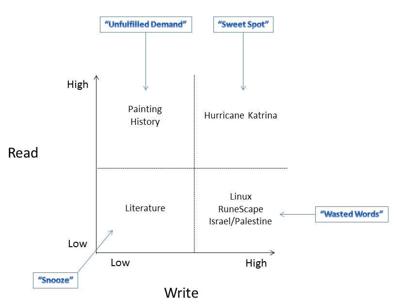

Wikipedia Esperanza (CSN, Wednesday, Week 12)
competing-with-social-networksyear-twoWikipedia Esperanza: should Wikipedians keep it or shutter it? What kind of problems arise on User-Generated Content (UGC) platforms?
Keep Esperanza
Premise: retention is a problem.
-- Quality of articles increases => pressure on editors to perform
-- Helps retain editors and overcome negative stigmas (petty, flamewar-ridden community)
-- Stress alerts work => Esperanza saved Bally!
-- Aids in conflict resolution
Ditch Esperanza
Premise: retention is not a problem.
-- Esperanza focuses editors on quantity, not quality => keeps mediocre editors involved; they SHOULD leave
-- Coffee lounge is a distraction => energy would be better put towards writing/editing
-- NOT transparent => admin coaching; imposing artificial hierarchy
-- Stress alerts don't work
-- Engagement is NOT a problem => new editors joining in droves (611K editors in '06); attrition is minimal (90% of all editors are active); average number of edits is quite high (4.5 edits/mo)
How does Wikipedia resolve conflicts? Open debate; democratic (maybe) process. But:
-- Violent fights/"revert wars" ==> settle disputes, but demotivating to "losers," who may stop contributing => BUT it feels good to correct people.
-- Is conflict resolution process really good? Most persistent editor wins; high schoolers with free time trump judgment of professionals.
Who are Wikipedia editors?
Usually nerds, usually white, write about tech more than "culture." Socially awkward?
Usually over-educated and underemployed.
Usually care about the topic (activists?).
Only 2% of editors are women, and half of them edit under a male-sounding name!
Takeaway: There are "gendered" technologies! Wikipedia: built by boys, for boys.
The big problem: correlation between write and read on Wikipedia = 0 (really. statistically.) Editors don't write more about the stuff that users actually look at.

If we want a good encyclopedia, we need to move stuff from "top left" to "top right" --- Wikipedia is really bad for finding out about certain subjects (painting, some kinds of history).
Compare to Yelp --- strong correlation between read/write, reviewers incentivized to produce content that actually gets read a lot (Elite status, compliments, etc.).
{kind=link}
Takeaway: There are huge read/write problems with UGC platforms --- because people typically write for themselves/other editors, NOT readers.